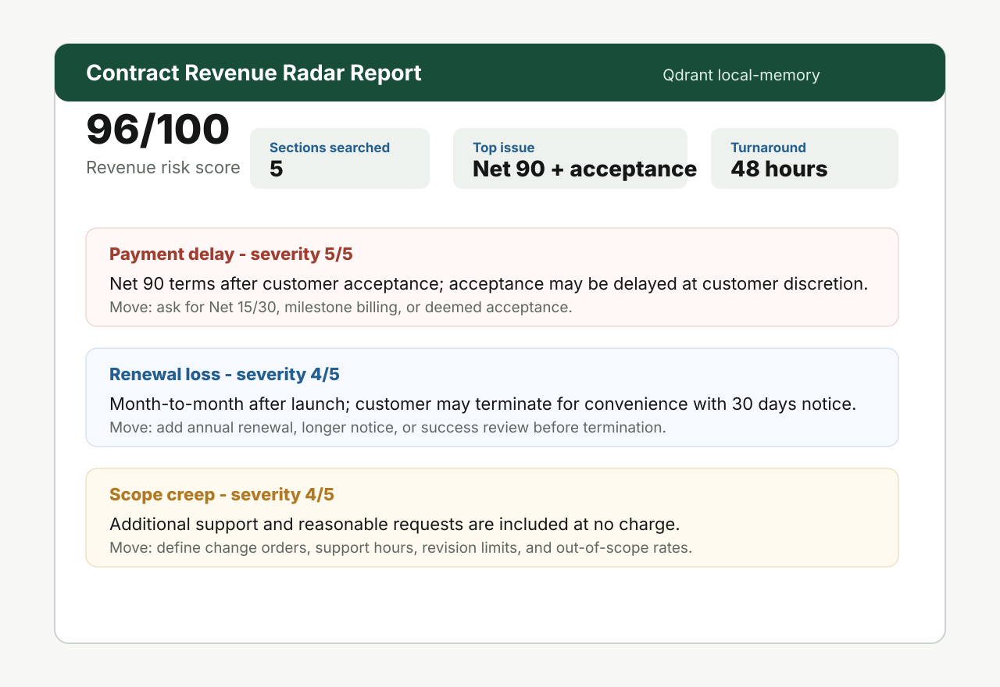

Payment delay
Flags Net 60/90, customer-acceptance gates, retainage, and discretionary approval language.
48-hour business-risk review, not legal advice
Contract Revenue Radar reviews SOWs, MSAs, proposals, and order forms for payment delays, acceptance traps, scope creep, service credits, termination risk, and security blockers. Fixed-scope audit. 48-hour turnaround.

What buyers receive
Flags Net 60/90, customer-acceptance gates, retainage, and discretionary approval language.
Highlights month-to-month exposure, short notice windows, and broad termination rights.
Finds vague support promises, unlimited revisions, and no-charge additional-work clauses.
Identifies broad refund, chargeback, and service-credit language that can erase earned revenue.
Pricing
The default pitch is the $2,500 package. The $1,500 audit is a foot-in-door offer; the $5,000 sprint is for teams with multiple templates or a sales/legal bottleneck.
$1,500
Up to 5 agreements, prioritized report, 30-minute review call.
$2,500
Audit plus fallback positions for payment, renewal, change-order, and credit terms.
$5,000
15-25 documents, clause risk playbook, reusable intake checklist, 5-business-day delivery.
Best fit
FAQ
No. This is a business-risk audit focused on revenue, cash flow, renewals, and delivery margin. Counsel should approve final contract language.
SOWs, MSAs, proposals, order forms, renewal terms, implementation agreements, managed services agreements, and redacted excerpts.
A prioritized report showing risky excerpts, why they matter commercially, and recommended negotiation moves. Higher-tier packages include fallback clause positions and an intake checklist.
Start with redacted docs, templates, public order forms, or a short excerpt. No sensitive personal data is required for a sample audit.